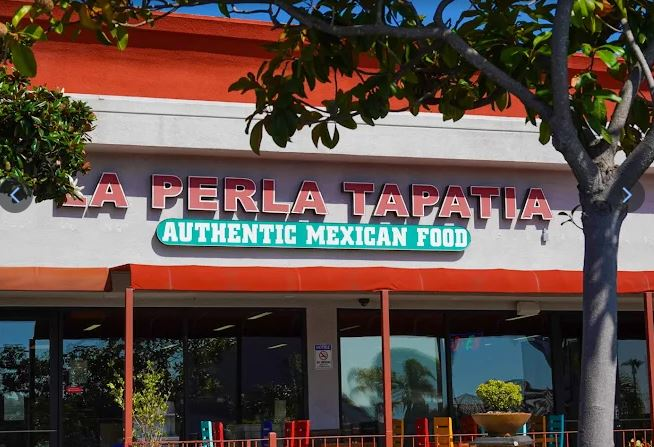
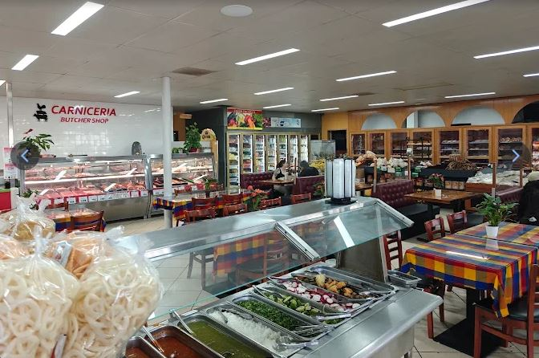
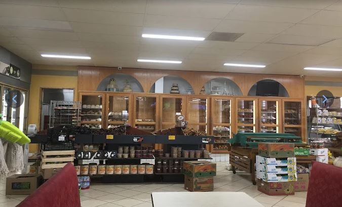
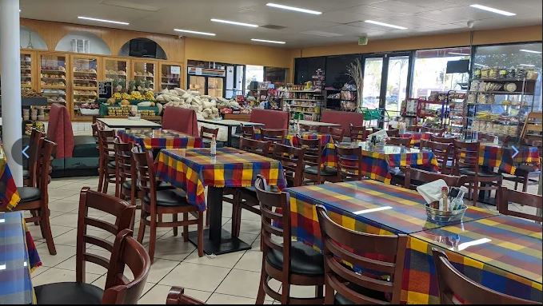

Carnicería
Fresh cuts and seasoned meats ready for the grill, stovetop, or your family recipe.
Mercado · Carnicería · Panadería
Mexican groceries, everyday essentials, fresh ingredients, and the flavors that make a kitchen feel like home.
See what’s inside
La Perla Tapatia is also a full neighborhood market stocked with Mexican pantry favorites, produce, baked goods, snacks, drinks, and everyday grocery essentials.
Fresh cuts and seasoned meats ready for the grill, stovetop, or your family recipe.
Chiles, herbs, fruit, vegetables, and the ingredients behind everyday Mexican cooking.
Pan dulce, celebration cakes, flan, and fresh-baked treats to bring home.
Spices, sauces, beans, tortillas, snacks, drinks, and hard-to-find Mexican staples.



Open daily · 7 AM–10 PM
Visit us on Mission Avenue for groceries, fresh food, and a taste of home.
Get directions